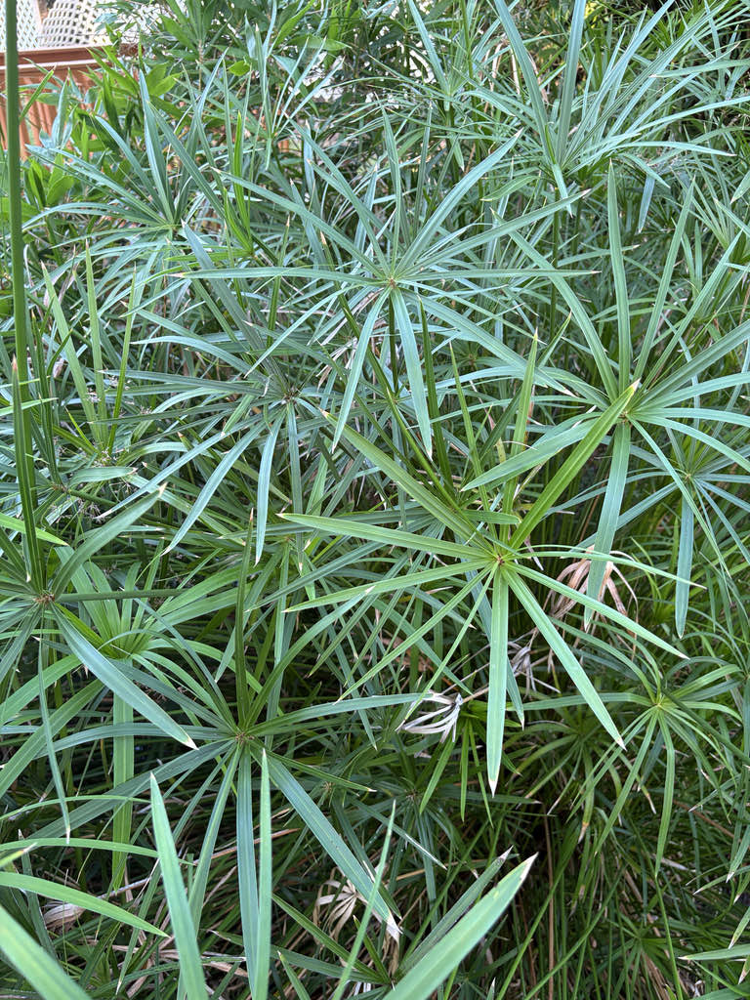

- Cut a stem, flip it upside down in a glass of water, and within a couple of weeks a new plant sprouts from the bract bases — one of the more counterintuitive propagation tricks in the plant world. The stems naturally bend and touch water in the wild, rooting wherever the bract-head makes contact with wet soil.
- Despite its water-loving nature, research has shown this plant can actively pull heavy metals such as copper and manganese out of contaminated water — a process called phytoremediation — making it a candidate for constructed wetland treatment systems.
- A subspecies of this plant — Cyperus alternifolius subsp. flabelliformis — holds the Royal Horticultural Society's Award of Garden Merit, the RHS's benchmark distinction for plants proven to perform reliably in cultivation. It is a rare honor for a wetland sedge and reflects how far this African marsh plant has traveled from its origins to international ornamental status.
- Scientists have taken the phytoremediation story one step further: the metal-laden plant biomass harvested from treatment wetlands can be converted into biochar through high-heat pyrolysis.
- A 2022 study in Environmental Science and Pollution Research confirmed that biochar made from Cyperus alternifolius functions as an effective depolluting agent — turning a harvested invasive weed into a tool for further cleanup.
Native to tropical and southern Africa, Madagascar, and the Arabian Peninsula, where it grows in swamps, along stream margins, and in seasonally flooded grasslands from sea level to well over 2,000 meters. Its native range spans more than 30 sub-Saharan countries.
It arrived in cultivation worldwide as an ornamental — valued for its striking geometric form in water gardens and containers. In Florida it has naturalized in wet, disturbed sites throughout the central and southern peninsula, spreading from planted stock by both seed and rhizome.
- The genus name Cyperus comes from the Greek kypeiros, a word used by the ancient botanists Theocritus and Theophrastus to describe a type of sedge. The species epithet alternifolius combines the Latin alternus (alternate) and folium (leaf), referring to the alternating arrangement of the bract-like structures at the stem tip.
- Sedges as a family — Cyperaceae — are distinguished from true grasses by their typically triangular stems, three-ranked leaves, and solid (not hollow) culms. The field mnemonic 'sedges have edges' refers to that triangular stem, which you can feel by rolling a culm between your fingers. Umbrella Papyrus shows this trait clearly.
- In its native Africa the plant has long been harvested for practical uses: fiber for weaving, material for construction, and as animal forage. In cultivation worldwide it has found a second life as a water-garden ornamental and, more recently, as a study subject for phytoremediation — its roots absorb and concentrate heavy metals from polluted water with notable efficiency.
In Florida's wet margins and pond edges, the dense stands of Umbrella Papyrus provide cover and nesting substrate for wading birds, waterfowl, and small mammals. The small achene seeds, produced in quantity after flowering, are eaten by birds and contribute to the plant's spread — which is part of why it has naturalized so readily in wetland edges across central and south Florida.
Aquatic invertebrates use the submerged root zone and stem bases as shelter and attachment sites, supporting the base of the food web in still or slow-moving water. Because this is a non-native plant with no co-evolutionary history with Florida's native fauna, it does not serve as a larval host for any of the state's butterflies or moths.
Spreads by two routes: seed and vegetative expansion via rhizomes. The rhizomatous rootstock sends up new culms, steadily enlarging the clump. Seeds disperse primarily by water — consistent with the plant's wetland habit — and germinate readily in saturated or moist soil.
Small, pale yellow-green to brown spikelets are borne in compound clusters (antheals) directly among the bract whorls at the stem tip. Individually they are not showy, but the overall arrangement — dense radiating clusters sitting in the umbrella of bracts — is the signature look of the plant. Flowering occurs primarily in summer through fall.
Each flower matures into a tiny, ellipsoid achene roughly 1 mm long. The achenes are three-angled — typical of the sedge family — and turn pale brown at maturity. They are eaten by birds and spread by water movement.
The upright culms are stiff, triangular in cross-section, and sheathed at the base by papery reduced leaves. Each culm is topped by a whorl of 11 to 22 narrow, arching, leaf-like bracts 4 to 14 inches long — the 'spokes' of the umbrella. Small flower clusters emerge from among these bracts. True leaves are absent; photosynthesis happens in the bracts and culms themselves.
A stout, creeping, woody rhizome anchors the plant and sends up new culms, often in a roughly linear row. The root system is fibrous and dense, contributing to erosion control in wetland margins but also making established clumps tenacious and difficult to fully remove.
The umbrella silhouette is unmistakable: a cluster of stiff, upright stems each crowned by a flat whorl of spreading green bracts. Look closely at the center of any mature umbrella-top and you will find the small, dense flower or seed clusters nestled between the bract bases.
Roll a stem between your fingers and feel the three edges — that triangular cross-section is the family trademark of the sedges. At the base of the clump, look for the dense mat of rhizomes and the papery sheaths where culms emerge.
The plant is not used as food and is not considered a meaningful edible. One source flags mild gastrointestinal upset — nausea and loose stools — if significant plant material is ingested, so it is best left uneaten. No credible toxicity listing for dogs was found; the ASPCA does not list this species as toxic to pets. Overall a low-hazard plant — just not one to snack on.
A note on the name: the plant widely sold and grown as Cyperus alternifolius in Florida is treated by the Atlas of Florida Plants (USF) and UF/IFAS as Cyperus involucratus — a closely related species from tropical Africa that has long been misidentified under the alternifolius name. Some taxonomic authorities treat the two as subspecies of a single species; others keep them separate.
We follow the botanical name as labeled on this specimen.
The FISC invasive listing applies under the name Cyperus involucratus (with C. alternifolius noted as a misapplied synonym). The practical implications are the same: in Florida's wet natural areas this is a plant to manage, not encourage to spread beyond cultivated settings.


- © Randall Carter (CC-BY-NC), via iNaturalist
- © Joanne Walker (CC-BY-NC), via iNaturalist